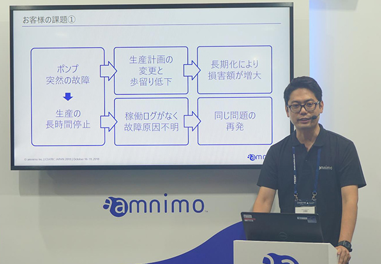

2018年10月16日～19日の日程で、千葉県の幕張メッセにおいて開催されている「CEATEC JAPAN 2018」に出展しました。
初日から多数のお客様がご来場されました。
インダストリアルIoT(IIoT)を利用するための技術的・手続的な障壁を無くした、アムニモ社のサービスの仕組みと、具体的な価値創出事例の数々をご覧いただきました。
IIoTを民主化するMeasurement as a Service
（代表取締役社長 谷口功一）
IIoT活用の手間を最小化するamnimoサービス（COO 林田健悟）
「簡単で安全なIoT」を実現するアムニモIoT基盤（マーケティング 鳥越研児）
「業務の手間を省く」ECサイトとサブスクリプション（マーケティング 田中竜太）
パートナーとの協業を加速する支援プログラム
（マーケティング 小川博司）
協業パートナーとのサービス構想
（取締役 竹内亮）
生産・在庫状況を見える化するprocess tracker
（マーケティング 川向寛実）
（横河マニュファクチャリング株式会社
グローバル生産戦略本部事業推進部 杉浦純一 様）
（横河マニュファクチャリング株式会社
グローバル生産戦略本部事業推進部 山口幸作 様）
ダウンタイム削減と稼働ログで故障の原因究明をアシストする pump guard（マーケティング 池上大介）
ダウンタイム削減と設備管理を効率化する
ポンプ遠隔監視ソリューション
（株式会社イワキ 製品企画本部
海外戦略部 横山雅彦 様）
野鳥鳥獣捕獲の効率化を実現する
スマートトラップソリューション
（株式会社 huntech
代表取締役CEO 川﨑亘 様）
デモ展示コーナーの様子
・センサーからのデータ取得、運用まで必要な機能が全て含まれているアムニモの基本サービスです。
・チャレンジャーの皆様はIIoTを素早く、リーズナブルに利用することができ、測定したいモノやコトをセンサーで測り、そのデータを活用し事業価値の想像に注力することが出来ます。
・基本サービスの"amnimo sense"で取得したヒトやモノの定量データを活用し、ドラッグ＆ドロップでワークスフローを構成できるアムニモの基本サービスです。
・短期間でお客様の要件に合わせたワークフローを開発することが出来ます。
・少量多品種の生産ラインにおいて、混在する各製造品の生産状況を可視化でき、管理者は発生している遅れや工程抜けなどを即座に発見できます。
・クラウドとセンサーを組み合わせたサービスとして提供しますので、低廉なコストでスタートできます。
・フレキシブルライン変更にもお答えします
・工場やプラントの生産設備用ポンプの異常動作を監視し、緊急時には停止することで、重大な故障を未然に防ぐとともに、遠隔地の管理者に通報できます。
・ポンプが故障した場合にも稼働データを常時記録できるので、そのデータを原因分析の一助とすることができます。
・野生鳥獣による農業被害は年間約200億円にも上る一方、捕獲には毎日の罠の見回り等大きな負担が伴います。
・センサーを通じた罠の遠隔監視により見回りの負荷軽減やジビエの利活用へ貢献可能です。
・アムニモを活用することで広範なエリアカバーや素早いサービス開発を実現しています。
会期中は、ご多用の中、当社ブースにお立ち寄り頂き、誠にありがとうございます。
社員一同、心よりお礼申し上げます。